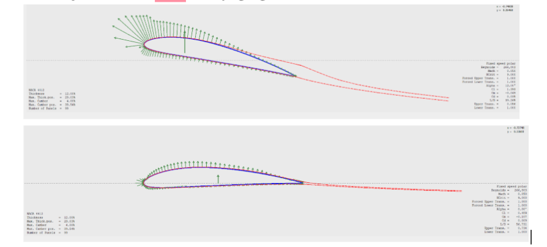

Sep 2022
Joined UC San Diego, BS Aerospace Engineering.
SYSTEM INITIALIZING...
Aerospace Engineering Portfolio
B.S.c Aerospace Engineering at UC San Diego (Class of 2026).
I'm passionate about space systems engineering, aircraft design and spacecraft engineering.
I am a fourth-year undergraduate Aerospace Engineering student driven by the convergence of Space Systems Engineering. My academic focus centers on the design of unconventional aircraft configurations, such as Blended Wing Bodies (BWB), and the complex integration of engineering systems within spacecraft .
Born with an international perspective and trilingual in English, Spanish, and French, I am uniquely positioned to bridge technical and cultural divides in the global aerospace sector. My aspiration is to stand at the forefront of the European space race, leading the development of next-generation spacecraft and defining the future of space exploration.
Joined UC San Diego, BS Aerospace Engineering.
Joined the Service Desk as a Technician.
Promoted to Service Desk Lead.
Joined Design-Build-Fly (DBF) Team.
Leading Senior Design Capstone Project.

Aerodynamics Team.

Leading 60+ technicians.

Ultra-Efficient Luxury Airliner.

MATLAB Structural Tool.

Flow Simulation Study.

Acoustics & Thermodynamics.

Mechanical Design.